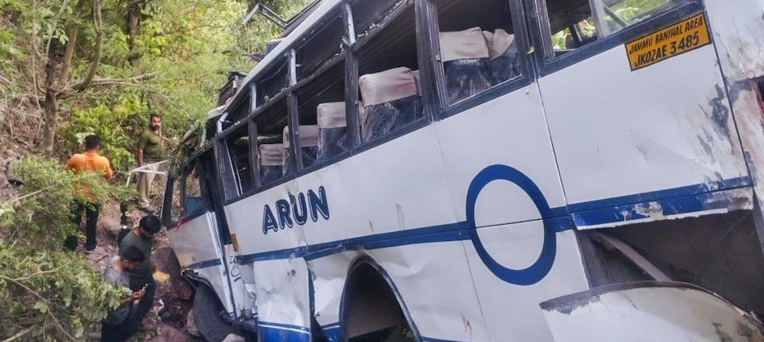

In a heartbreaking incident that underscores the continued threat of terrorism in the region, a bus carrying pilgrims was attacked by terrorists in Jammu and Kashmir's Reasi district, leading to a tragic accident that claimed the lives of 10 people and left 33 others injured. This senseless act of violence has once again brought to the forefront the urgent need for global attention and swift justice.
On Sunday evening, a bus filled with pilgrims returning from the revered Shiv Khori temple in Reasi to Katra became the target of a brutal terrorist attack. According to officials, terrorists opened fire on the bus, causing the driver to lose control. The bus subsequently veered off the road and plunged into a deep gorge, resulting in the tragic loss of lives and numerous injuries.
Senior Superintendent of Police (SSP) Reasi Mohita Sharma confirmed the details of the attack. "Due to the firing, the driver lost balance and the bus fell into a gorge," she said. The passengers, who were non-locals, have not yet been identified.
The local community and authorities sprang into action immediately following the incident. With the help of locals present at the accident spot, police managed to evacuate all passengers by 8:10 pm. The injured were swiftly transported to various hospitals in Reasi, Treyath, and Jammu for urgent medical care.
SSP Sharma also confirmed that the rescue operation had been successfully completed. The rapid response from both local residents and law enforcement undoubtedly saved numerous lives and ensured that the injured received prompt medical attention.
The gravity of the situation prompted an immediate response from the highest levels of government. Prime Minister Narendra Modi personally reached out to J&K Lieutenant Governor Manoj Sinha to get a comprehensive update on the situation. The Prime Minister has directed that the injured receive the best possible medical care and has assured that those responsible for this heinous act will face swift justice.
"PM Shri Narendra Modi Ji took stock of the situation and has asked me to constantly monitor the situation. All those behind this heinous act will be punished soon," the Office of LG J&K posted on X. "Hon'ble PM has also directed that all the injured are provided the best possible medical care and assistance."
Union Home Minister Amit Shah also issued a statement, emphasizing that the local J&K administration is working on a "war footing" to provide immediate medical attention to those injured. He reiterated that those behind this cowardly attack would not be spared.
The attack has drawn widespread condemnation from political leaders and public figures across India. First-time BJP MP Kangana Ranaut expressed her outrage, stating, "I strongly condemn the cowardly terrorist attack on the pilgrims in Reasi, Jammu and Kashmir. I pray for the departed and hope for the swift recovery of the injured."
J&K BJP President Ravinder Raina also condemned the attack, highlighting the resolve of Indian security forces. "Cowardly Pakistani terrorists cannot face the Indian Army, Jammu and Kashmir Police, and our paramilitary forces... The terrorists who have carried out this audacity will have to pay a heavy price for their crime.
In the aftermath of the attack, a joint operation headquarters comprising the police, Indian Army, and CRPF has been established at the site. A comprehensive, multi-dimensional operation has been launched to track down the terrorists, who are believed to be hiding in the upper reaches of Rajouri, Reasi, and Poonch
This horrific attack on innocent pilgrims is a stark reminder of the persistent threat of terrorism and the urgent need for global solidarity in combating this menace. The international community must stand with India in its fight against terrorism and ensure that justice is served swiftly
The Reasi terror attack is not just an attack on the pilgrims but an attack on the values of peace and humanity. The swift response from local authorities, the solidarity shown by the nation's leaders, and the ongoing operations to bring the perpetrators to justice reflect the resilience and determination of India. As we mourn the loss of innocent lives, we must also renew our commitment to eradicating terrorism in all its forms, ensuring that justice is served and such tragedies never happen again.
"Justice will be served, and the world must watch and support India in this crucial fight."